Bu menü, ana platformların genişlik (ve kurp genişletmesi) kurallarının tanımlanmasını sağlar:
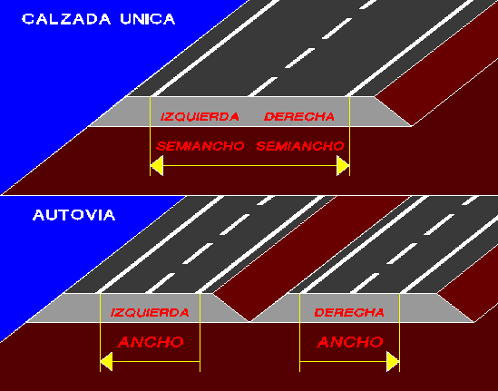
Grafik pencerede, ana platformların veya yarı-platformların sağ ve solundaki genişliklerin ve bunlara karşılık gelen kilometrelerin manuel olarak girilebildiği bir menü belirir.
Karayolları için, G0, G1 ve G2 değerleri aşağıdaki seçim türlerini destekler (Genişlik Seç):
- Sayısal: Genişlik klavye ile girilir.
- Tıklama: Ekranda grafik olarak tıklanır.
- Tıklama (KM Değiştir): Kilometreyi de tıklanan noktanın kilometresine göre değiştirir.
Tıklama ile yapılan seçimlerde, G2 değiştirilirse G0 ve G1 korunur; G1 değiştirilirse G0 korunur.
Kullanıcı KM'leri seçeneği, kilometrelerin kullanıcı tanımlı değerlerle girilmesine olanak tanır. Bu seçenek etkinleştirilip devre dışı bırakılabilir ve durumu .vol dosyasına kaydedilir.
Normalde GENİŞLİK 1 değeri doldurulur; GENİŞLİK 2 değeri programın kavşaklardaki hızlanma ve yavaşlama şeritleri için otomatik olarak eklediği kurp genişletmeleri için, GENİŞLİK 0 ise iç şeritler için ayrılmıştır. Çift deverli otoyollarda, eğer GENİŞLİK 0 tanımlanmamışsa, GENİŞLİK 1 iki eşit şeride bölünür. Ancak GENİŞLİK 0 tanımlanırsa, bu değer deverin dönme sınırını yerleştirmek için kullanılır.
Her iki taraftaki Genişlik 0, Genişlik 1, Genişlik 2 başlıklarından, her şeridin tüm verilerine aynı değer atanabilir.
Bir kesimde bir hız değiştirme şeridi tarafından oluşturulan kurp genişletmeleri ortaya çıktığında, eksen sütununda görünen değer, mevcut eksene giren veya çıkan ve bu genişletmeye neden olan katılım kolu ekseninin numarasını gösterir. [S] düğmesi (eksene göre genişletmeleri sil) ile bu eksenin neden olduğu GENİŞLİK 2 değerlerini silmek ve bilgiyi sıkıştırmak mümkündür. Silinecek eksen olarak 0 belirtilirse, program manuel olarak veya aşağıda açıklanan çizgiye göre genişlik gibi seçeneklerle oluşturulan GENİŞLİK 2 değerlerini siler.
Aşağıdaki tuşlar kullanılarak veri tablosu doldurulabilir ve düzeltilebilir:
| [Ekle] |
Tanımlanmış verilerin sonrasına, sola (S) veya sağa (D) yeni bir veri eklemeyi sağlar.
|
| [Tekrarla] |
Listedeki ilk veri olan mevcut veriyi sola (S) veya sağa (D) kopyalar.
|
| [Sil] |
Listedeki ilk veri olan mevcut veriyi soldan (S) veya sağdan (D) siler.
|
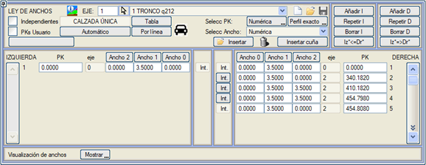
| [Sol*<=Sağ*] |
Sağ taraftaki tüm verileri sol tarafa kopyalar.
|
| [Sol*=>Sağ*] |
Sol taraftaki tüm verileri sağ tarafa kopyalar.
|
[Kaydet]  [Yükle] [Yükle] 
|
.anc uzantılı bir genişlik kuralı dosyası oluşturur veya açar. Bunun gibi kısmi DÜŞEY GÜZERGAH tabloları ayrı bir dosyaya kaydedilebilir, ancak bu yalnızca kısmi bir çözümü saklamak isteniyorsa gereklidir. .vol dosyası tüm düşey güzergahı içerir ve program hesaplamalarda bu dosyanın içeriğini kullanır.
|
| [Otomatik] |
 Temel genişliklere ve istenen tip aracın uzunluğuna bağlı olarak genişlik kuralını otomatik olarak oluşturur ve kurp yarıçapına göre gerekli genişletmeleri belirler. Temel genişliklere ve istenen tip aracın uzunluğuna bağlı olarak genişlik kuralını otomatik olarak oluşturur ve kurp yarıçapına göre gerekli genişletmeleri belirler.
Geçişler klotoidler boyunca yapılır. İki platformdan biri için sıfır (0) genişlik verilirse, o platform var olmaz ve genişletmeler sadece diğerine uygulanır.
Tip araç uzunluğu 0 verilirse, genişletmeler iptal edilir ve nominal genişlikler korunur.
|
| [Tablo] |
Genişletmelerin yarıçaplarla ilişkilendirildiği ve genişletme geçişlerinin nereden yapılacağının tanımlandığı kütüphanedeki .tsa tablolarından birini kullanarak genişletme kuralını hesaplamayı sağlar. Ancak en yaygın kullanım, bu tablonun GENEL sekmesinden ilişkilendirilmesidir. Kullanıcı, ihtiyaç duyduğu kadar genişletme tablosu oluşturabilir ve değiştirebilir. Örneğin, exterior.tsa tablosu, genişletmeleri sadece kurbun dış tarafından uygulamaya olanak tanır. İspanyol karayolu yönetmeliği için en güncel tablo ES_31IC_rev2016.tsa'dır. Ayrıca eski genişletme tabloları da mevcuttur: ES_31IC_rev2015.tsa ve ES_31IC_rev2001.tsa.
|
[Tablo->GRUP]
|
Bu seçenek yalnızca eksen, GENEL sekmesinde bir genişletme tablosu ile ilişkilendirilmişse görünür. Bu durumda, düğmeye basıldığında program bu tabloyu, eksenin ait olduğu grubun tüm eksenlerine uygular.
|
| [Çizgiye Göre]
|
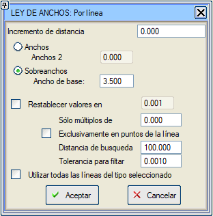Ekranda grafik olarak seçilen herhangi bir çizgiyi genişlik kuralı olarak tanımlamayı sağlar. Bu, genişletme ve iyileştirme projelerinde veya kentsel güzergahlarda genişliği mevcut alana uyarlamayı mümkün kılar.
Bu araç, sonuçta elde edilen mesafeye bir artış değeri eklemeye de olanak tanır (pozitif değer çizginin sağına, negatif değer soluna bir artış anlamına gelir).
Programın ne sıklıkla bir nokta alacağını tanımlamak için bir mesafe (sadece katları) belirlenebilir. 0 olarak bırakılırsa, Istram aşağıdaki noktaları ekler:
- Çizgi üzerindeki noktaların projekte edildiği kilometreler.
- Eksenin plandaki özel (geometrik başlangıç/bitiş) kilometreleri.
- Enkesitlerin hesaplandığı kilometreler (arazi enkesiti olduğu için veya enterpolasyon için bir olay işaretlendiği için).
Sadece çizgi noktalarında seçeneği etkinleştirilirse, plandaki özel kilometrelerde veya arazi/enterpole enkesitlerinde veri oluşturulmaz.
Genişlikleri tabloya atamanın iki yolu vardır:
- Genişlikler seçeneği seçilirse, çizginin konumuna göre hesaplanan değer GENİŞLİK 1 sütununa yerleştirilir ve kullanıcının GENİŞLİK 2'de tanımladığı değer, genişlik tablosunun GENİŞLİK 2 sütununa aktarılır.
- Genişletmeler seçeneğiyle, GENİŞLİK 1 sütunu belirtilen temel genişlikle doldurulur ve toplam genişliğe kadar olan fark GENİŞLİK 2 olarak aktarılır. Hesaplanan genişliğin temel genişlikten küçük olması durumunda, GENİŞLİK 1'e hesaplanan genişlik, GENİŞLİK 2'ye ise boş bir değer atanır.
Değerleri geri yükle seçeneği, eklenen çizginin ilk ve son noktasından itibaren belirli bir mesafede önceden var olan genişlik değerlerini geri yüklemeyi sağlar.
Arama mesafesi seçeneği, daha uzaktaki noktaların göz ardı edileceği belirli bir mesafeyi tanımlamaya olanak tanır.
Filtreleme toleransı seçeneği, genişlik değerini bu toleransla yuvarlamaya olanak tanır ve bir kesimde aynı genişlik değerine sahip ardışık ikiden fazla veri olmasını önleyerek her kesimin sadece ilk ve son verisini bırakır.
Seçilen tipteki tüm çizgileri aynı anda kullanma imkanı.
|
| Karayolları için (bölünmüş yollar hariç), ikonu, bir taşıt şablonu kullanarak taşıt süpürme analizi zarfından genişlik kuralını hesaplamayı sağlar. Seçilebilecekler:
- Simülasyonu gerçekleştirmek için taşıt tipi.
- Sağ platformun mu, sol platformun mu (araç ters yönde hareket eder) yoksa her ikisinin mi analiz edileceği.
- Yörünge hesaplama aralığı.
- Bir genişlik verisi çıkarma aralığı (Daha sonra aynı genişliğe sahip ardışık ikiden fazla veriyi önlemek için sıkıştırılırlar).
- Minimum platform genişliği.
- Sol marj. Sürücünün aracın burnunun sol ön köşesini eksene göre koruduğu mesafedir. Değer negatifse, bu mesafe seyir halindeki platformun içindedir.
- Sağ marj. İlerleme yönüne göre aracın sağ tarafının zarfı ile platform kenarı arasındaki minimum mesafedir.
Başka bir yöntem de bir *.try dosyası kullanmaktır:
- Bazı kutucuklar gizlenir, çünkü yapılacak analiz .try dosyasında tanımlanmış olacaktır (Eksene mesafe, burnun eksene mesafesi, burnun bir kenara mesafesi, ...).
- Yörünge, artan kilometre yönünde tek bir yönde gerçekleştirilir ve aynı zarf her iki tarafın genişliklerini belirlemek için kullanılır.
Her iki şekilde de, yörünge zarfı, etki alanındaki genişlik değerlerini oluşturmak için kullanılacaktır. Bir .try dosyası kullanılması durumunda, analizin başlangıç ve bitiş kilometreleri de dikkate alınacaktır.
|
G0==0 İptal Et
|
Çift deverli otoyollar için, varsayılan olarak, G0==0 ise G1 iki eşit parçaya bölünür. G0==0 olduğunda iç platformun iptal edilmesi imkanı eklenmiştir; bu durumda iç banketin deverleri dış platformun deverleriyle ilişkilidir.
|
Araya Ekle
|
.anc dosyalarını yüklemeyi sağlar. Önce yeni dosyanın getirdiği taraf ve kesimdeki genişlik verilerini siler ve kendi verilerini ekler. Kavşak oluşturma işleminde bu tür dosyalar üretilir.
|
 |
Bu düğme , kavşaklardan gelen genişletmelerin hangi katılım kolundan silineceğini sorar ve bunları siler.
|
Genişlik Geçişi Ekle
|
(Genişlik 1 veya Genişlik 2'de) Başlangıç KM ve Bitiş KM kutucuklarına gireceğimiz veriler ve bunlara karşılık gelen Genişlik değerleri ile bir genişlik geçişi yapmayı sağlar.
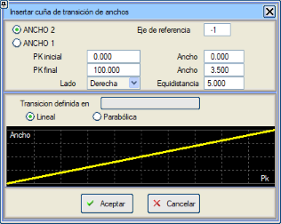
Geçiş, varsayılan olarak doğrusal yapılır, ancak geçişi oluşturmak için bir .den tablosu kullanarak bir genişlik kuralı belirleyebiliriz (tablonun TD4 komutu  ), böylece istenirse parabolik bir geçiş kullanılabilir. Örneğin CHILE_2013c.den veya ES_31_IC_rev2016b.den gibi tablolarda tanımlanmış parabolik geçişler bulunmaktadır. ), böylece istenirse parabolik bir geçiş kullanılabilir. Örneğin CHILE_2013c.den veya ES_31_IC_rev2016b.den gibi tablolarda tanımlanmış parabolik geçişler bulunmaktadır.
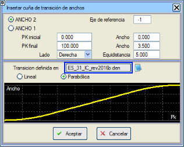
Genişlik 2 durumunda, eklenen verileri kolayca silebilmek için hayali bir referans eksen numarası (negatif olabilir) girilebilir.
|
Int.
|
Ara verilerde, kilometreye bağlı olarak önceki ve sonraki veriler arasında genişlik değerlerini enterpole etme seçeneğimiz vardır.
|
Genişliklerin Görüntülenmesi: diyalog kutusu genişlikleri içeren bir diyagram gösterir.
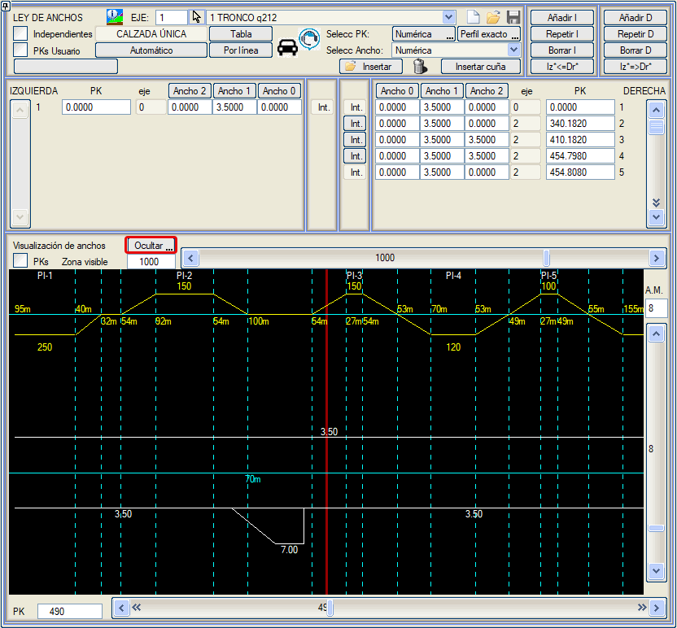
Genişlikleri uyguladığımız noktanın görüntülenmesi için ekranda her iki tarafın mevcut verilerinin kilometresiyle çakışan vurgulanmış bir çizgi gösterilir:
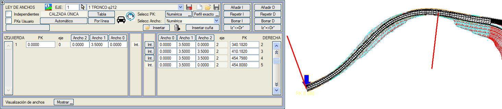
Kurp Asistanı
Bir .tsa tasarım tablosu kullanılarak bir genişlik kuralı girildikten sonra,  ikonu kullanılarak erişilebilen Kurp Asistanı'nı kullanabiliriz. ikonu kullanılarak erişilebilen Kurp Asistanı'nı kullanabiliriz.
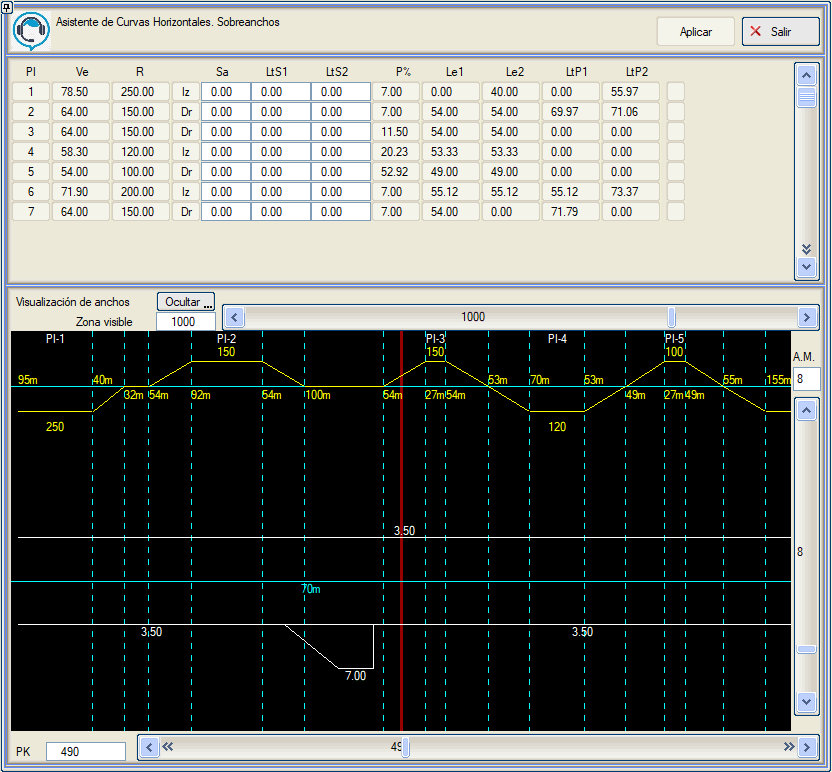
Bu araçla, kurplara veya some noktalarına göre düzenlenmiş bir dizi veri gösterilir: Ve (spesifik hız), R (kurp yarıçapı),
kurp yönü, Sa (genişletme), LtS (genişletme geçiş boyu), P% (dever), Le (klotoidlerinin uzunluğu) ve LtP
(dever geçiş boyu).
Bu pencereden her bir kurp için iki ayrı veri belirleyebiliriz: S (kurp genişletmesi) ve LtS (sıfırdan genişletmeye ve genişletmeden sıfıra geçiş uzunluğu).
Deverler için benzer bir araç bulunmaktadır.
Bağımsız Genişlikler
Hem karayolları hem de otoyollar için her iki tarafta dört adede kadar bağımsız şerit tanımlama imkanı. Her şerit (Genişlik 0, Genişlik 1, Genişlik 2 ve Genişlik 3) kendi kilometre ve genişlik tablosuyla tanımlanır.
Eğer karayolu veya otoyol her iki tarafta dörtten fazla bağımsız şeride sahipse,  10 genişlik seçeneği etkinleştirilir.
Seçenekler aynıdır ancak menü her bir geometriyi tanımlamak için her iki yanda 10 sekmeye kadar genişler. Genişlik değerleri, çizgiye göre genişlik aracıyla da elde edilebilir.
Bu durumda tanımlama her zaman iç şeritlerden başlamalıdır, çünkü bir şeridin genişliğini belirlemek için, çizginin eksene olan mesafesi hesaplanır ve refüj, iç banket ve daha içteki şeritlerin kapladığı genişlikler düşülür. 10 genişlik seçeneği etkinleştirilir.
Seçenekler aynıdır ancak menü her bir geometriyi tanımlamak için her iki yanda 10 sekmeye kadar genişler. Genişlik değerleri, çizgiye göre genişlik aracıyla da elde edilebilir.
Bu durumda tanımlama her zaman iç şeritlerden başlamalıdır, çünkü bir şeridin genişliğini belirlemek için, çizginin eksene olan mesafesi hesaplanır ve refüj, iç banket ve daha içteki şeritlerin kapladığı genişlikler düşülür.
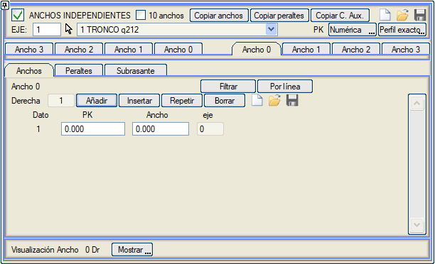
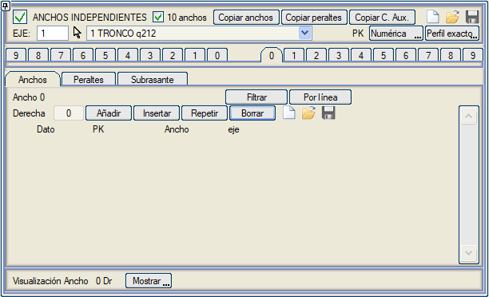
10 bağımsız genişlik etkinken menü görüntüsü
Ayrıca, "genel" şeritlerden herhangi birinin tüm verilerini bu bağımsız genişlikler penceresindeki herhangi başka bir şeride kopyalamak için Genişlikleri Kopyala aracı da kullanılabilir.
Genişlikler için bir .loa dosyası kaydedilebilir.
Filtrele aracı, Düşey Güzergah aracına benzer bir işleyişle, genişlik kesimleri arasında maksimum bir değer ve mesafe farkına göre filtreleme yapmayı sağlar. Bu seçenek, örneğin çizgiye göre genişliklerle çalışırken bağımsız genişlik kesimlerinin sayısını azaltmak için kullanışlıdır.
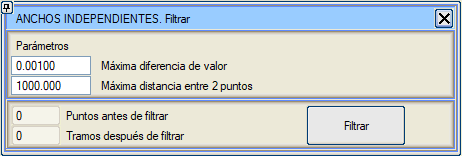
Bağımsız genişlikler diyalog kutusunda, bu şeritlerin her biri için bağımsız bir dever de tanımlanabilir. Bazı şeritler genel deveri kullanırken diğerleri kendi özel deverini kullanabilir, bu durum özel olarak işaretlenmelidir.
Varsayılan işaret standardı Klasik'tir, Uluslararası standardı kullanmak için ilgili kutucuk etkinleştirilebilir. Bu ayar .vol dosyasında saklanır. Genel standart değiştirilirse, bu menüyü etkilemez.
Dever, genişlikle birlikte veya ayrı olarak çizgiye göre de belirlenebilir. Dever çizgiye göre hesaplandığında, düzenlediğimiz şeridin deverini tanımlamak için birkaç seçenek seçilebilir:
- Ana dever: Platformun o tarafı için tanımlanmış dever kuralının deverini kopyalar.
- Bağımsız dever: Bu diyalog kutusunda tanımlanan deveri kullanır.
- Uzatılmış: Kendisinden önceki şeridin deverini kopyalar (genişlik 0 hariç).
- İç dever: Çift deverli veya çift bağımsız deverli bir otoyol tanımlıyorsak, iç şeridin deverini kopyalar.
- Artırılmış çatı eğimi: Kendisinden önceki şeridin çatı eğimi deverini kopyalar ve dD kutucuğuna yazdığımız artışı ekler.
Düşey Güzergah ve Anlık Enkesitte Göster:
Bu şekilde dever, Anlık Enkesit penceresinde ve Düşey Güzergah menüsünün dever bandında görüntülenir. Her iki tarafta farklı bir şerit kullanılabilir, örn. Sol->Genişlik1'in Deveri ve Sağ->Genişlik2'nin Deveri.
Genişlikleri Kopyala aracına sahip olduğumuz gibi, benzer şekilde çalışan Deverleri Kopyala adlı bir aracımız da vardır: "genel" dever kuralını dört tablodan (sağ/sol dış/iç) herhangi birinden sekiz bağımsız platformdan herhangi birine kopyalamayı sağlar. Ayrıca, bu platform için deveri "Bağımsız Dever" olarak değişir.
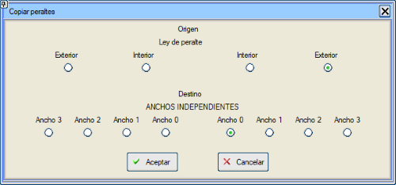
Deverler için bir .lop dosyası kaydedilebilir.
Genişliklerde olduğu gibi, bağımsız deverleri tanımlarken de deverleri filtrelemek için bir aracımız vardır.
Ayrıca her şerit için bu genişlikler ve deverlerden yola çıkarak tesviye yüzeyi de bağımsız olarak tanımlanabilir.
Bağımsız tesviye yüzeyi verilerinin uygulanması için ilgili şeritte Bağımsız Tesviye Yüzeyi seçeneğinin etkinleştirilmesi gerekir.
Bu şekilde, kilometre bazında aşağıdaki parametrelerle tanımlanır:
Kalınlık:
- Göreceli: Kendisinden önceki şeridin tesviye yüzeyinin sonundan itibaren.
- Mutlak. Her şeridin başlangıç kodundan (1, 1.2, 1.5 veya 1.9) itibaren kırmızı kottan.
- Minimum. Şeridin iç ve dış noktasındaki kalınlık kontrol edilir.
Genişletme: Tesviye yüzeyi bir sonraki şeridin içine doğru uzatılır.
Eğim:
- Uzatılmış + artış: Önceki şeridin tesviye yüzeyi eğimiyle devam eder ve bir artış eklenir.
- Paralel + artış. Şeridin kırmızı kot eğimini kullanır ve bir artış eklenir.
- Tesviye Yüzeyi + artış. Teorik tesviye yüzeyi eğimini kullanır ve bir artış eklenir.
- Dever + artış: Ana platformun teorik deverini kullanır ve bir artış eklenir.
Eğer enkesitte bordür varsa, referans kalınlıklar ve mesafeler, bordürlerle değiştirilmeden önceki orijinal enkesitten alınır.
Tesviye yüzeyi için bir .los dosyası kaydedilebilir.
Yardımcı Platformları Kopyala
Genişlikleri ve deverleri kopyalama seçeneklerinde olduğu gibi, bu araç da yardımcı platformlar tablosundaki genişlik verilerini bağımsız genişlikler tablosuna kopyalar. Enine eğim (Dever) de kopyalanabilir.
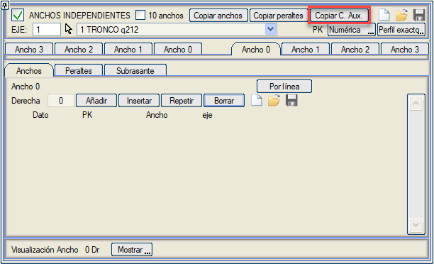
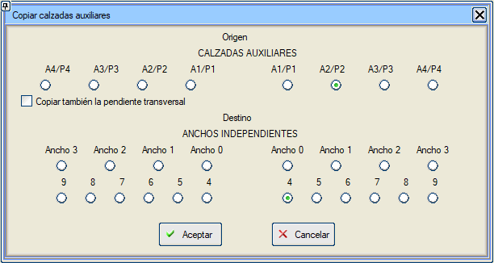
Not: Yardımcı Platformlardaki tüm verileri kopyaladıktan sonra, çift kayıt oluşmaması için bu tablodaki verilerin silinmesi gerekmektedir.
|